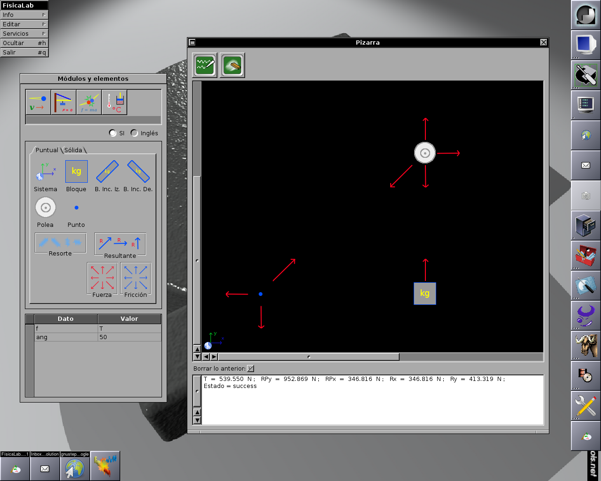
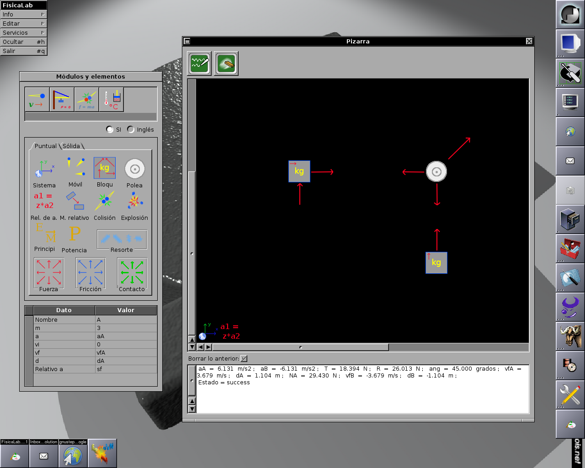
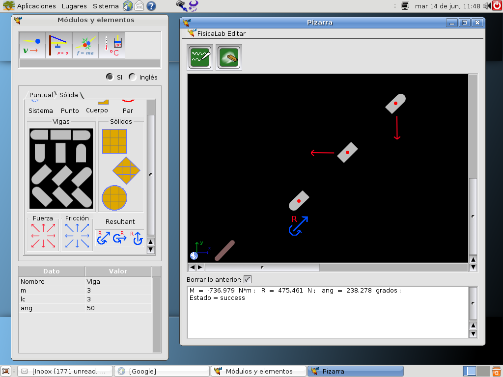
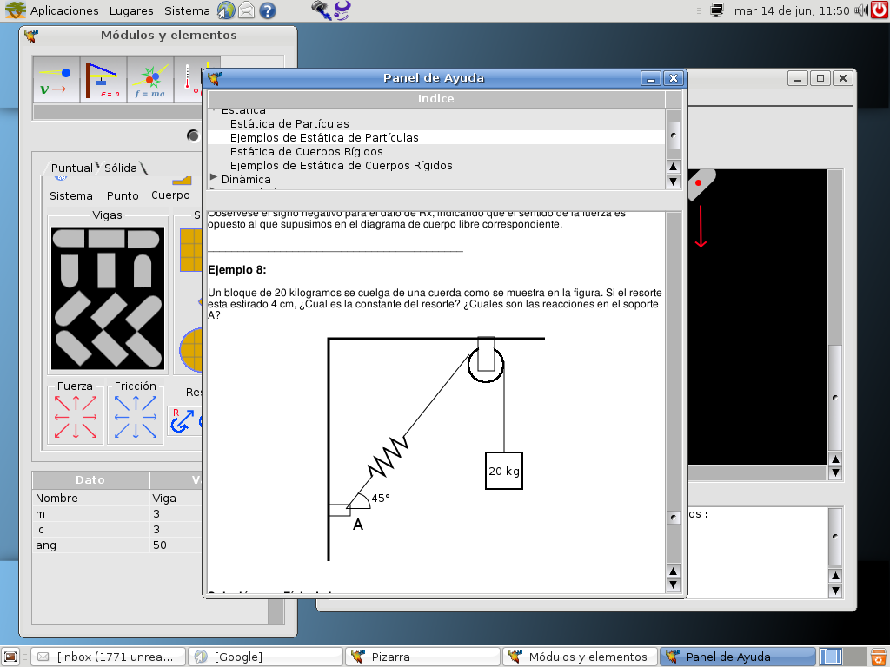
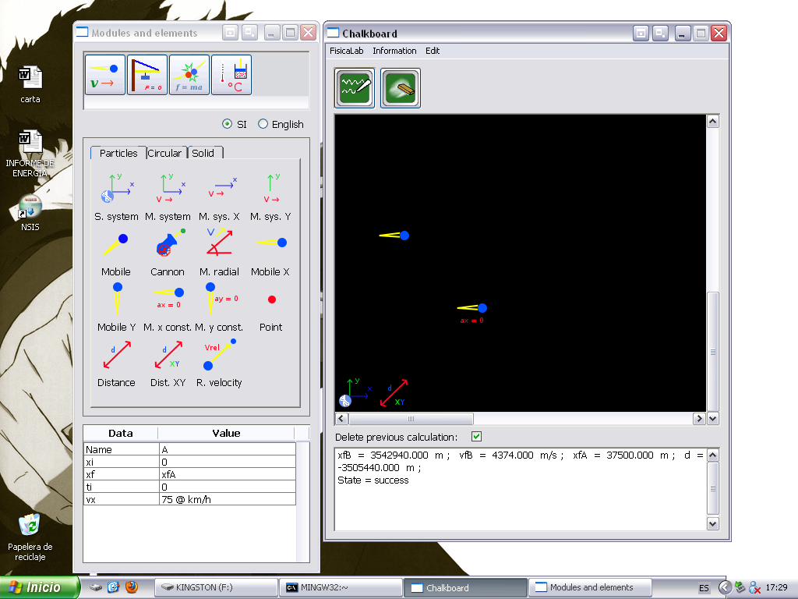
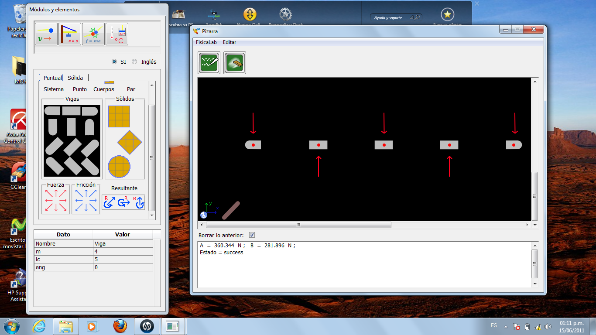
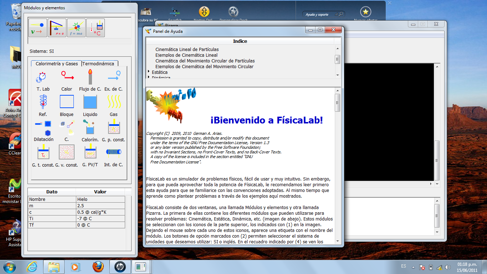

Some screenshots of FisicaLab running on different desktops and OS. To enlarge the image, right click above this, and select "See image" on contextual menu (FisicaLab is fully available on english, I will upload screenshots in english later):
|  |  |  |
|  | |
 |
|  | |
 |